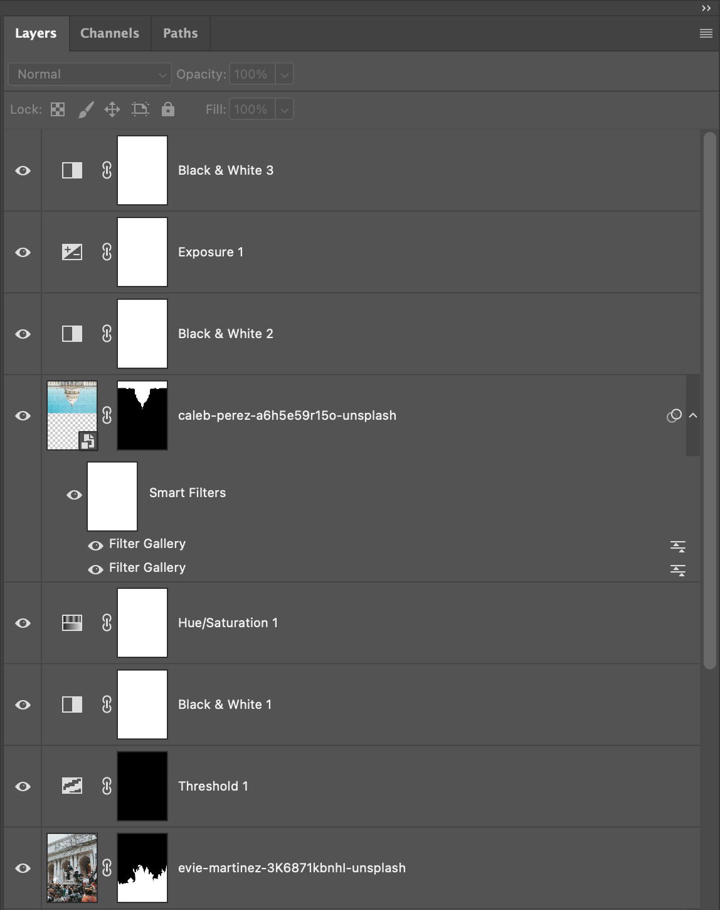
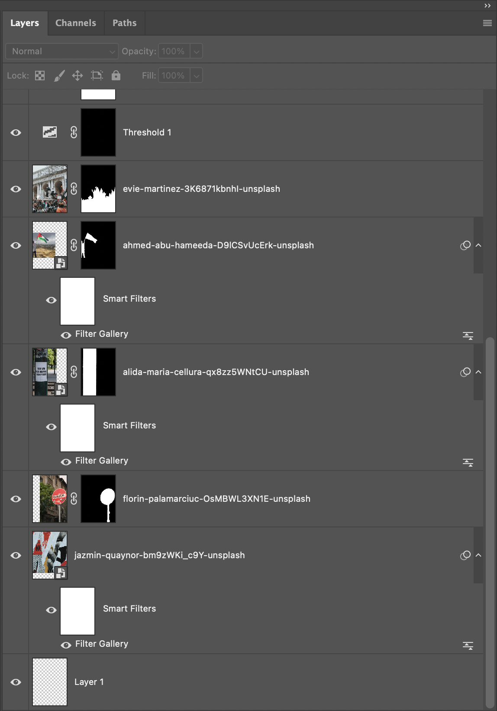
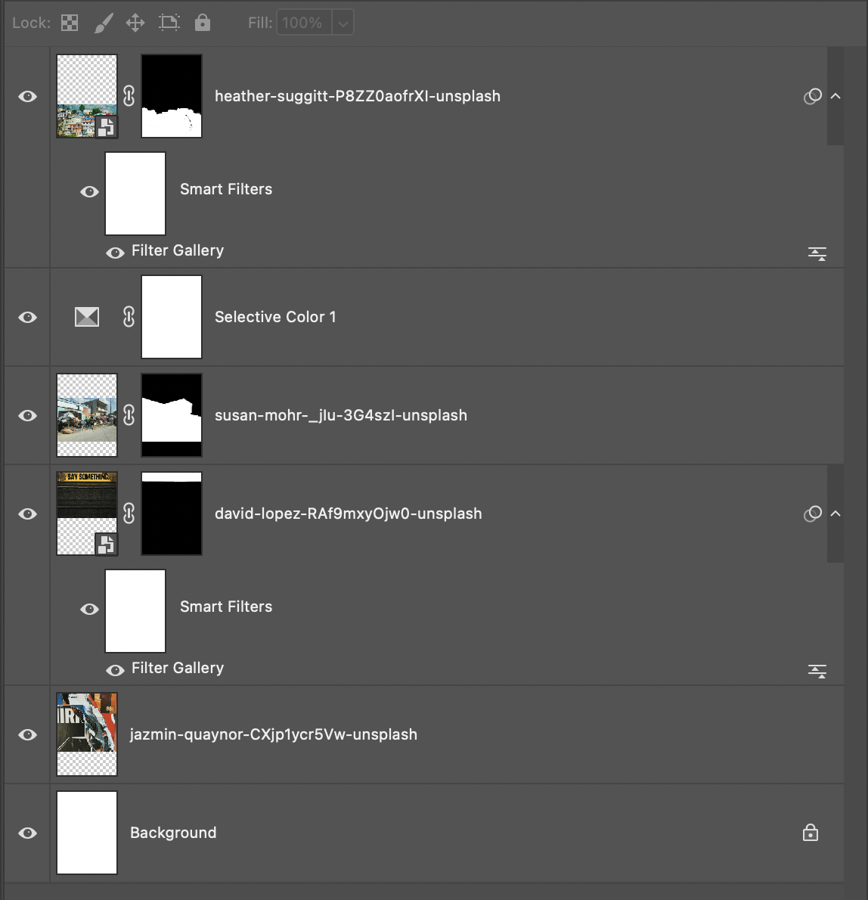

Screenshot:
 Screenshot:
For my first collage I am titling it “Fight Back”. It features students protesting In New York City for the lives of Palestinians, demanding an end to the ongoing genocide and calling for a ceasefire. This topic is extremely important to me and I wanted to demonstrate that through this collage. This collage also features a powerful image of a Palestinian man waving his flag in Gaza as well as a sign that states “fuck war, fuck weapons, fuck systems” and lastly an upside down image of the capitol building. The techniques I used to achieve the results I did were a bit arbitrary because I did a lot of experimenting. First I tried to separate the backgrounds from the subjects, but because these were complex images I had a lot of subtracting from mask to do for every image. Next I wanted my image to be in black and white so I first played with hue,saturation and brightness but I liked how the image looked most when I just used the black and white adjustment layer instead. Lastly, I had the most fun working with filters, I wanted to create a newspaper effect so I used texturize for everything. I got all of my images from Unsplash.
Similarly, for my second collage I also got all of my images from Unsplash. This collage is titled “Use Your Voice” and it is about the displacement of Haitian citizens that has been an ongoing issue for years. As of July, 2025, more than 1.3 million Haitians have been displaced and have had to flee their homes and live in unsafe conditions. I stacked 4 images, the one on the bottom is a Haitian community, the second is a display of the effects of the displacement and the third is an image that simply says “use your voice” in order to make it known that using your voice and spreading awareness about this will help. I used selective color on the reds and blues of the images which are the colors of the Haitian flag to make them more prominent. My goal was also to make the image newspaper-like in order to make it known that awareness needs to be spread, I achieved this by using the texturize filter over the images.